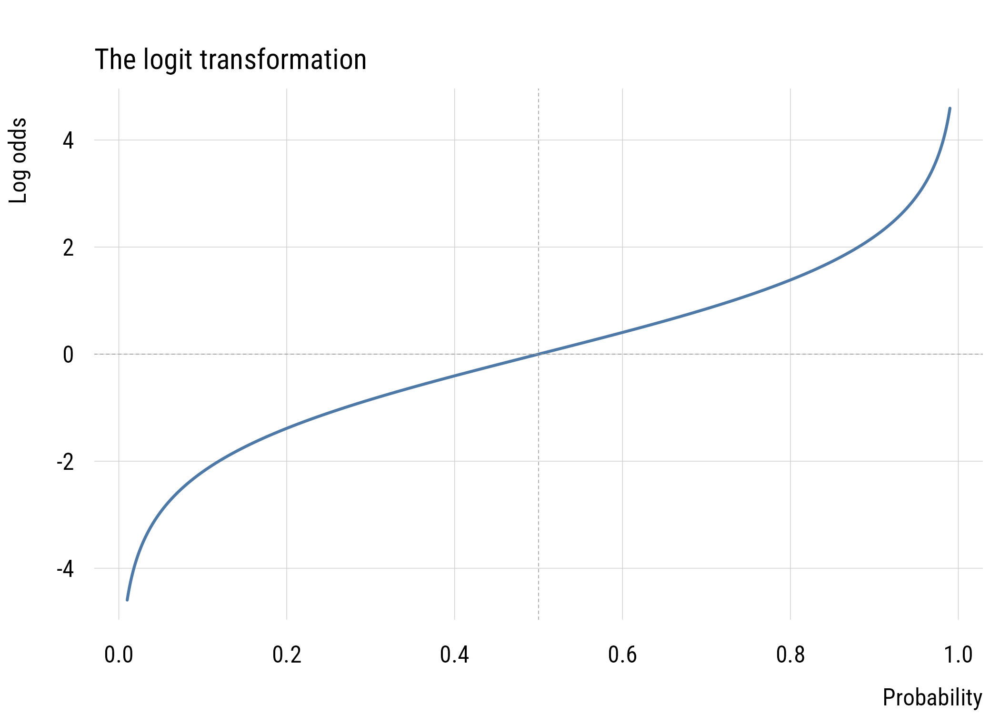
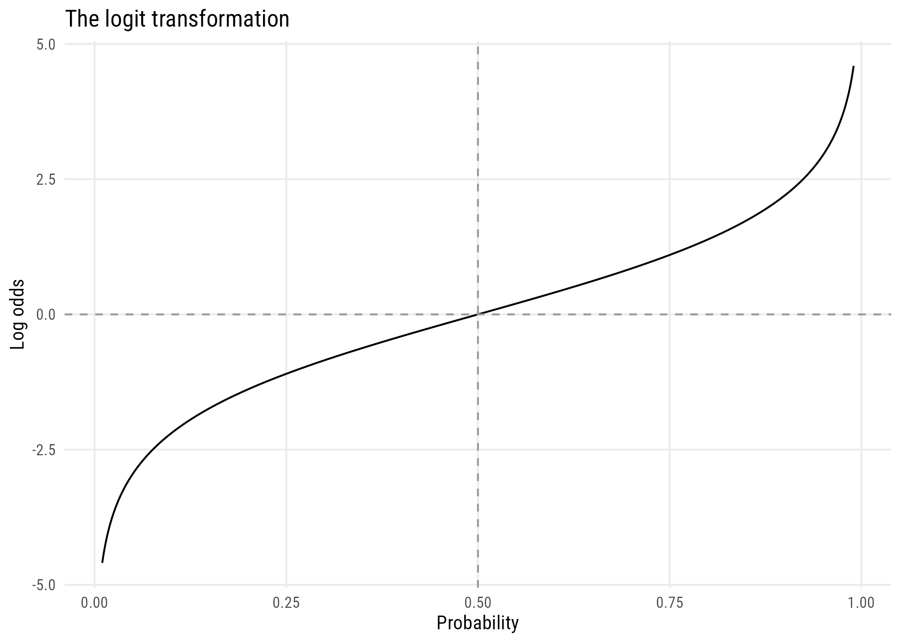

Before diving into logistic regression, it helps to think carefully about what we’re trying to model when we have two binary variables. The fundamental question is: are they associated? And if so, how do we measure the strength of that association?
Chapter 3 built marginal, joint, and conditional probabilities out of a contingency table and left the story there. This chapter finishes it.
15.1 Measures of dependence in 2x2 tables
We’ll work through an example: PhD sociology admissions at Berkeley in 2009, broken down by citizenship status.
U.S. applicants are admitted at 13.5%; non-U.S. applicants at 4.1%. You’ll often see this written as \(\pi_{\text{admitted}|\text{U.S.}} = .135\) or \(\Pr(Y = 1 \mid X = 1) = .135\).
This can also be flipped to ask a different question. What is \(\Pr(X = 1 \mid Y = 1)\), the probability that someone who is admitted is a U.S. citizen? And the probability that someone who is not admitted is a U.S. citizen?
Other U.S.
no 86.50585 218.49415
yes 10.49415 26.50585
How many of those four numbers did you actually have to calculate? Only one. Once you know a single cell, the margins fix the other three. That is the sense in which a 2x2 table has one degree of freedom, and it will come back when we test for independence below.
The observed counts depart from these expected values, which tells us there’s some association. But how much? Four measures below.
Simple and interpretable—about a 9 percentage-point gap. Greater difference means greater departure from independence.
The problem is the same difference means different things at different baselines. Going from .001 to .020 is a much bigger deal than going from .500 to .519, even though both are “.019 differences.”
15.1.3.2 Relative risk ratio (RRR)
Instead of differencing, we can divide the probabilities. This is called the relative risk ratio.
This is more informative than a raw difference when probabilities are far from .5. But the RRR for rejection—keeping non-U.S. applicants in the numerator for consistency—is only:
(1- p_admit_other) / (1- p_admit_us)
Other
1.108004
The same association (\(3.3\times\) vs \(1.1\times\)) looks very different depending on whether you frame it as success or failure. This asymmetry is a real problem for interpretation.
15.1.3.3 Odds ratio
First, what are odds? One in six is the probability of rolling a 6. One to five are the odds of rolling a 6. The odds of an event is \(\pi / (1 - \pi)\): probability of success divided by probability of failure. If you’ve ever heard “the odds are 5 to 1 against,” that’s what it means.
A U.S. applicant’s odds of admission are .156, or about 6.4 to 1 against. A non-U.S. applicant’s are .043, or about 23.4 to 1 against. The ratio of those two odds is 3.6.
There’s a convenient shortcut for 2×2 tables using cell counts directly—the product of the two diagonals divided by the product of the other two:
The odds ratio solves the success-failure asymmetry: the OR for rejection is also 3.6.1 But the OR is still asymmetric in one way: it ranges from 0 to \(\infty\), and the same relationship looks like 3.6 or 0.28 depending on which group you put in the numerator.
1 Odds of rejection for non-U.S.: \((.959/.041) = 23.4\). For U.S.: \((.865/.135) = 6.4\). Ratio: \(23.4/6.4 = 3.6\).
15.1.3.4 Log odds ratio
Taking the natural log solves the remaining problems:
log(OR)
U.S.
1.286226
The log odds ratio:
Is centered at 0 when there’s no association (instead of 1 for the OR)
Is symmetric: flipping which group is the reference just changes the sign
Ranges over all of \((-\infty, +\infty)\)
c(log_OR =log(OR), reversed =log(1/ OR))
log_OR.U.S. reversed.U.S.
1.286226 -1.286226
This is why logistic regression is logistic regression—it models the log odds of the outcome as a linear function of predictors. Every coefficient you estimate is, at heart, a log odds ratio. The key transformation is the logit:
plt(log_odds ~ p, data = p_grid, type ="l", lwd =2,xlab ="Probability", ylab ="Log odds",main ="The logit transformation")abline(h =0, lty =2, col ="gray60")abline(v =0.5, lty =2, col ="gray60")

Figure 15.1: The logit transformation.
Show code
ggplot(p_grid, aes(p, log_odds)) +geom_line() +geom_hline(yintercept =0, linetype ="dashed", color ="gray60") +geom_vline(xintercept =0.5, linetype ="dashed", color ="gray60") +labs(x ="Probability", y ="Log odds",title ="The logit transformation")

Figure 15.2: The logit transformation.
The curve is symmetric around \(p = .5\), where \(\text{logit}(.5) = 0\), and it maps the bounded interval \((0, 1)\) to the full real line. That stretching is exactly what a linear model needs: a probability cannot be modeled directly as \(b_0 + b_1 x\), because a straight line will eventually predict values below 0 or above 1. Log odds have no such boundaries. We take that up in Chapter 16.
15.1.4 Summary of the four measures
Measure
Formula
Value
Independence
Difference
\(\pi_1 - \pi_2\)
\(.094\)
\(0\)
RRR
\(\pi_1 / \pi_2\)
\(3.3\)
\(1\)
Odds ratio
\((\pi_1/\bar\pi_1) / (\pi_2/\bar\pi_2)\)
\(3.6\)
\(1\)
Log odds ratio
\(\log(\text{OR})\)
\(1.28\)
\(0\)
15.2 Excursus: standalone tests for independence
Chapter 17 will build models of the dependence between variables. Stand-alone tests are common, however, and you should be able to read them.
If you’ve taken any stats before, you’ve probably seen the good old chi-square test. You generally use it to analyze categorical data (where none of the variables involved is continuous). It asks: are these two variables independent? It calculates this as follows:
\[
\chi^2 = \sum \frac{(O_i - E_i)^2}{E_i}
\]
where \(i\) indexes table cells, \(O\) means “observed,” and \(E\) means “expected values if independent.” Or in English: square the observed-expected difference and divide by the expected frequency for each cell, then add up all these values.
We can do this easily in R.
chisq.test(berk, correct =FALSE)
Pearson's Chi-squared test
data: berk
X-squared = 6.2905, df = 1, p-value = 0.01214
Fisher’s exact test answers the same question a different way. For all possible tables with the same marginals, we ask: how many of these give at least as much evidence of association as the observed table? The p-value is the proportion of hypothetical tables where the association is at least as strong.
fisher.test(berk)
Fisher's Exact Test for Count Data
data: berk
p-value = 0.01146
alternative hypothesis: true odds ratio is not equal to 1
95 percent confidence interval:
1.232012 14.416963
sample estimates:
odds ratio
3.608676
Fisher’s test is the safer choice when cells are small, as they are here. Only four non-U.S. applicants were admitted.
Tables need not be 2x2. Let’s look at the contingency table of degree and sex in the 2024 GSS. We will use the janitor::tabyl() function as a more capable version of the base R table() function.
d <-readRDS(here::here("data", "gss2024.rds")) |> haven::zap_labels() |>select(tvhours, degree, sex) |>drop_na() |>mutate(sex =factor(sex,labels =c("M", "F")), # sex as a factordegree_fac =factor(degree,labels =c("none", "HS", "AA", "BA", "grad")))xtab <- d |>tabyl(sex, degree_fac)xtab |>adorn_totals(c("row", "col"))
sex none HS AA BA grad Total
M 66 471 66 212 130 945
F 117 516 120 260 186 1199
Total 183 987 186 472 316 2144
This doesn’t seem like a “model”—because it’s not. There is no coefficient, no effect size, no prediction, only a verdict on independence. But it turns out we can make it into a model. We’ll need to first consider a new probability distribution, which is Chapter 17.
15.3 Practice
Here’s a table from the GSS on whether spanking is acceptable, by sex:
sex
spank_ok Male Female Sum
yes 461 489 950
no 226 132 358
Sum 687 621 1308
Calculate all four measures of dependence. Which sex is more likely to say spanking is OK, and by how much? Specifically, work out:
\(\Pr(\text{disapprove})\)
\(\Pr(\text{disapprove} \mid \text{male})\) and \(\Pr(\text{disapprove} \mid \text{female})\)
the odds ratio, male versus female, and then female versus male
the log odds ratio in both directions
15.4 Recap
a contingency table cross-classifies two categorical variables
its margins give marginal probabilities, its cells joint and conditional ones
conditional probabilities can be taken in either direction, and the two answer different questions
under independence, expected cell counts are the product of the margins divided by the total
four measures describe that association: the difference in probabilities, the relative risk ratio, the odds ratio, and the log odds ratio
the difference ignores the baseline, the RRR changes when you swap success for failure, the odds ratio is invariant to that swap, and the log odds ratio adds symmetry around zero
the logit maps \((0,1)\) onto the whole real line
chi-square and Fisher’s exact return a verdict, not an effect size